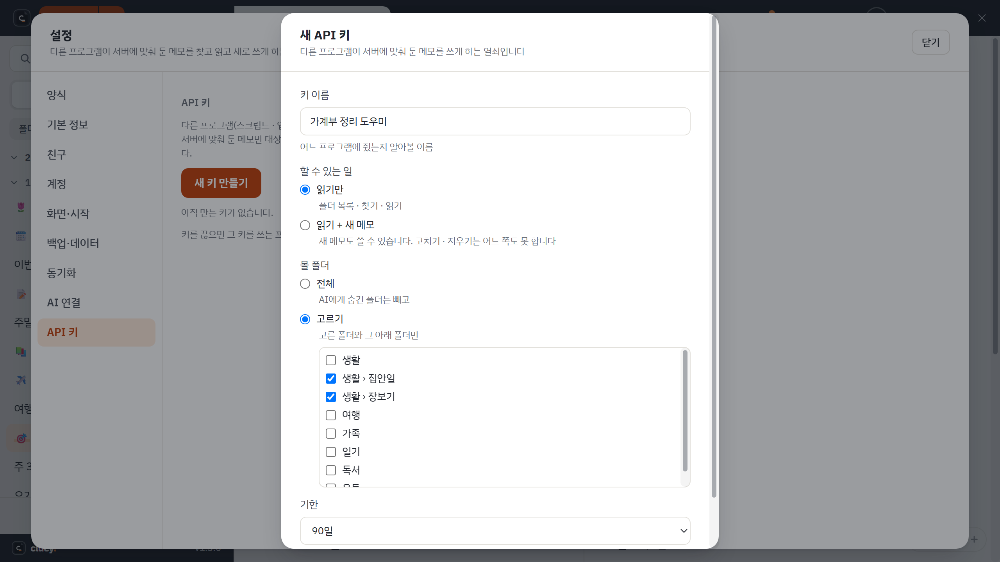
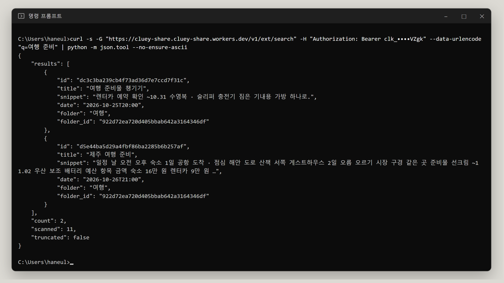

다른 프로그램(스크립트, 업무 도구 등)이 인터넷으로 내 메모를 가져가거나 새 메모를 넣게 하는 열쇠입니다. 동기화로 서버에 올라와 있는 메모만 대상이고, 설정의 API 키 탭은 로그인했을 때만 보입니다.
키 만들기
- 설정(톱니바퀴)의 API 키 탭에서 새 키 만들기 를 누릅니다.
- 이름(어느 프로그램에 줄 키인지 알아볼 이름), 할 수 있는 일, 볼 폴더, 기한 을 정합니다.
- 만들어지면 키(
clk_로 시작)가 한 번만 보입니다. 복사해서 안전한 곳에 둡니다. 창을 닫으면 다시 볼 수 없고, 서버에는 되돌릴 수 없는 값만 남습니다.

| 정하는 것 | 고를 수 있는 것 |
|---|---|
| 할 수 있는 일 | 읽기만 / 읽기 + 새 메모. 고치기와 지우기는 어느 쪽도 못 합니다. |
| 볼 폴더 | 전체(AI에게 숨긴 폴더는 뺌) / 고른 폴더와 그 아래 폴더만 |
| 기한 | 없음 / 30일 / 90일 / 1년 |
- 목록에서 이름, 권한, 기한, 마지막 사용을 보고 끊기 로 언제든 막습니다. 끊으면 그 키를 쓰는 프로그램은 바로 막히고 되살릴 수 없습니다.
- 키는 사람마다 20개까지 만들 수 있습니다.
- 한 키로 1분에 60번까지 부를 수 있습니다. 넘으면 잠시 막힙니다.
- 잠긴 메모와 AI에게 숨긴 폴더는 어떤 키로도 보이지 않습니다.
사용하기
주소는 https://cluey-share.cluey-share.workers.dev 입니다. 모든 요청에 Authorization: Bearer 키 머리글을 붙입니다. 아래는 윈도우 명령 프롬프트 기준 curl 예시입니다. clk_여기에키 자리에 만든 키를 넣으세요.
| 주소 | 하는 일 |
|---|---|
GET /v1/ext/folders | 볼 수 있는 폴더 목록 (id, 이름, 경로) |
GET /v1/ext/search | 메모 찾기. q 찾을 글자(대소문자 무시, 비우면 전부), from · to 날짜(YYYY-MM-DD), folder 폴더 id · 이름 · 경로, limit 기본 20 · 최대 50 |
GET /v1/ext/memo/메모id | 메모 하나 읽기 (제목, 폴더, 날짜, 본문 글자) |
POST /v1/ext/memo | 새 메모. 본문 {"title","body","folder"}. body 필수(10만 자까지), title 이 없으면 "AI 메모", folder 가 없거나 못 찾으면 "AI 메모" 폴더. "읽기 + 새 메모" 키만 가능 |
폴더 목록
curl "https://cluey-share.cluey-share.workers.dev/v1/ext/folders" -H "Authorization: Bearer clk_여기에키"메모 찾기
curl -G "https://cluey-share.cluey-share.workers.dev/v1/ext/search" -H "Authorization: Bearer clk_여기에키" --data-urlencode "q=회의" --data-urlencode "limit=5"결과에는 메모마다 id, 제목, 앞부분(snippet), 날짜, 폴더가 들어 있습니다. 찾기는 최근에 고친 메모 300개까지 살펴보고, 그보다 오래된 메모를 보지 못했으면 truncated: true 로 알려 줍니다.
메모 읽기
curl "https://cluey-share.cluey-share.workers.dev/v1/ext/memo/찾기결과의id" -H "Authorization: Bearer clk_여기에키"새 메모 넣기
curl -X POST "https://cluey-share.cluey-share.workers.dev/v1/ext/memo" -H "Authorization: Bearer clk_여기에키" -H "Content-Type: application/json" -d "{\"title\":\"주간 정리\",\"body\":\"첫 줄\n\n둘째 문단\"}"넣은 메모는 서버에 올라가고, 사용자의 PC 들이 다음 동기화 때 받아 갑니다. 작성자는 API · 키 이름 으로 표시됩니다.

오류가 나면
| 상태 | 뜻 |
|---|---|
| 401 | 키가 틀렸거나, 끊었거나, 기한이 지났습니다. |
| 403 | 읽기만 되는 키로 새 메모를 넣으려 했거나, 계정이 정지 · 탈퇴 상태입니다. |
| 404 | 없는 메모입니다. 잠긴 메모, 숨긴 폴더, 키의 폴더 범위 밖도 같은 404 입니다. |
| 413 | 본문이 너무 길거나 동기화 용량이 가득 찼습니다. |
| 429 | 1분에 60번을 넘었습니다. 다음 분에 다시 하세요. |
키를 가진 사람은 그 키가 허락한 만큼 메모를 볼 수 있습니다. 채팅창이나 공개된 저장소에 붙여 넣지 마세요. 새어 나갔다면 바로 끊기 를 누르세요.